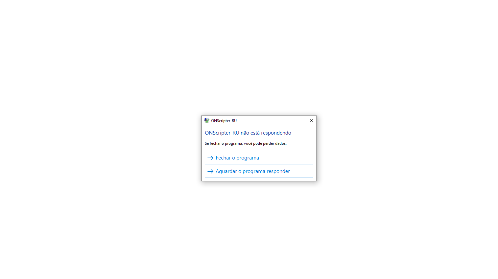

Alamuto
2023-01-19 18:22:23
My game launches with a white screen and crashes, can't do anything after that and no log appears. Game does not respond.
- Attachments
-
- 
- R6G2sy5oOt.png (17.02 KiB) Viewed 19967 times
-
- "ONSCRIPTER-RU is not responding.
If you close the program, you'll lose data.
>Close the program
>Wait for it to respond - 5uN6MuZ6uX.png (10.28 KiB) Viewed 19967 times
- "ONSCRIPTER-RU is not responding.